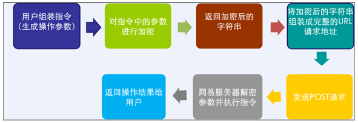
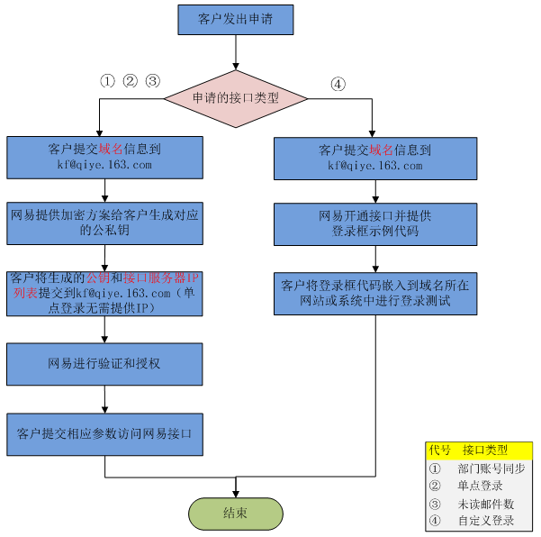
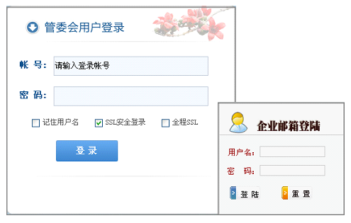

集成接口
网易企业邮箱提供多种集成接口与客户应用系统进行无缝集成，可实现组织架构和未读邮件数同步，支持用户网站登录首页实现单点登录和自定义登录界面，解决了网易企业邮箱系统与客户应用系统的集成问题。
网易企业邮箱提供多种集成接口与客户应用系统进行无缝集成，可实现组织架构和未读邮件数同步，支持用户网站登录首页实现单点登录和自定义登录界面，解决了网易企业邮箱系统与客户应用系统的集成问题。
这份文档帮助客户或经销商详细了解网易企业邮箱接口集成的具体功能和操作方法。
这份文档的预期读者为客户IT相关负责人、经销商客服和技术支持人员。
超文本传输协议(HTTP)是一种通信协议，它允许将超文本标记语言(HTML)文档从web服务器传送到Web浏览器。
统一资源定位符（URL，英语UniformResourceLocator的缩写）也被称为网页地址，是因特网上标准的资源的地址。统一资源定位符 URL 是对可以从因特网上得到的资源的位置和访问方法的一种简洁的表示。
RSA加密算法是是目前最有影响力的公开密钥密码体制加密算法，它能够抵抗到目前为止已知的所有密码攻击，已被ISO推荐为公钥数据加密标准，从提出到现在的三十多年里，经历了各种攻击的考验，逐渐为人们接受，普遍认为是目前最优秀的公钥方案之一。国内银行的网银通讯也是采用此类加密传输方式，可以有效防止数据被盗用或篡改，给予用户数据安全保护的最高级别。
网易企业邮箱拥有多个集成接口供客户使用，并能与其他业务系统进行集成。
网易企业邮箱提供多种集成接口与客户应用系统进行无缝集成，可实现与用户应用系统中组织架构同步和未读邮件数同步，并且可以在用户应用系统或者用户网站登录首页实现单点登录或者嵌入自定义登录的入口，解决了网易企业邮箱系统与客户应用系统的集成问题。集成接口采用了RSA加密算法和服务请求IP地址过滤等技术保障数据交互接口的安全。
| 对接条件 | 组织结构同步 | 单点登录 | 未读邮件数 | 自定义登录 |
|---|---|---|---|---|
| RSA公钥登记 | √ | √ | √ | |
| 服务器时间一致 | √ | √ | ||
| 服务器出口IP登记 | √ | √ | ||
| 开通接口权限 | √ | √ | √ | √ |
| 系统部门数据结构一致 | √ |
1. 生成公私钥
Utils.createKeyPair();
Generating a pair of RSA key ...
pubKey:30819f300d06092a864886f70d010101050003818d003081890281810085802e30d10d33197354c6c2d0785526ff17b4741048745f17e8e91cb38c70dd60e9bce1bf9b73d9215ccb56ad68c5efcf3d7f62677cd685cb1664601b57f1535138ea1e60a...
priKey:30820276020100300d06092a864886f70d0101010500048202603082025c0201000281810085802e30d10d33197354c6c2d0785526ff17b4741048745f17e8e91cb38c70dd60e9bce1bf9b73d9215ccb56ad68c5efcf3d7f62677cd685cb1664601b57f1535138ea1e60a42e8ccbb813ba8f7c91d27fcfde305cd1edc04a5aa26afba8e04c87c786113c2616f2fb8b6f5b9e0c55fb141eb96ae7426d35fbe9de581fccb621020...
1024-bit RSA key GENERATED.
2. 把公钥和IP地址告诉接口提供方进行授权。(注：单点登录接口不需要限定IP，可以不提供)
3. 生成操作参数（原始字符串）。
4. 参数加密：
Utils.encrypt(String priKey, String source);
其中，priKey是私钥，source是原始字符串，返回加密后的字符串。
5. 组装完整URL请求地址。
6. 发送POST请求。
7. 返回操作结果。整个接口应用过程中， 接口调用流程如下：
注：以下流程图中红色字体部分的是客户申请需提供的资料
部门帐号同步接口通过HTTP协议提交同步指令或查询指令。同步指令支持创建、更新和删除部门，创建、禁用、删除和恢复帐号，修改帐号密码和属性，创建和删除帐号别名。查询指令支持查询部门列表、帐号列表和帐号别名列表。
http://mail.qiye.163.com/domain/services/externalApi?cid=*&enc=*URLEncoder.encode(String,"utf-8");编码，以保证不存在特殊字符干扰参数值的解析。
| 操作名 | 操作说明 | 操作参数 | 参数属性 | 备注 |
|---|---|---|---|---|
| createOrg | 创建部门 | ouid | 必填 录入项 | |
| org_unit_name | 必填 录入项 | |||
| parent_org_unit_id | 选填 匹配项 录入项 | 创建下级部门时使用 | ||
| updateOrg | 更新部门 | ouid | 必填 匹配项 | |
| org_unit_name | 选填 录入项 | 更新部门名称 | ||
| u_desc | 选填 录入项 | 更新部门描述 | ||
| deleteOrg | 删除部门 | ouid | 必填 匹配项 | 要求该部门下没有邮箱帐号 |
| createUser | 创建帐号 | account_name | 必填 录入项 | |
| nickname | 必填 录入项 | |||
| password | 必填 录入项 | |||
| department | 选填 匹配项 录入项 | |||
| job_no | 选填 录入项 | |||
| exp_time | 选填 录入项 | |||
| address_right | 选填 录入项 | |||
| privacy_level | 选填 录入项 | |||
| updateUser | 更新帐号 | account_name | 必填 匹配项 | |
| nickname | 选填 录入项 | 更新姓名 | ||
| department | 选填 匹配项 录入项 | |||
| status | 选填 录入项 | |||
| job_no | 选填 录入项 | |||
| exp_time | 选填 录入项 | |||
| address_right | 选填 录入项 | |||
| privacy_level | 选填 录入项 | |||
| delta_quota | 选填 录入项 | |||
| deleteUser | 删除帐号 | account_name | 必填 匹配项 | 禁用帐号7天，7天后彻底删除 |
| recoverUser | 恢复帐号 | account_name | 必填 匹配项 | 删除帐号7天内可以恢复 |
| updateUserPwd | 更新帐号密码 | account_name | 必填 匹配项 | |
| password | 必填 录入项 | |||
| addUserAlias | 添加帐号别名 | account_name | 必填 匹配项 | |
| alias_name | 必填 录入项 | |||
| deleteUserAlias | 删除帐号别名 | alias_name | 必填 匹配项 |
| 操作名 | 操作说明 | 操作参数 | 参数属性 | 备注 |
|---|---|---|---|---|
| getDepartmentList | 查询所有部门数据 | - | - | 以XML格式返回数据 |
| getAccountList | 查询某部门的所有帐号数据 | ouid | 选填 | 以XML格式返回数据 |
| recursion | 选填 | 不填参数时返回域下所有帐号数据 | ||
| getUserAlias | 获取帐号别名 | account_name | 必填 | 多个别名逐行显示 |
注意：
| 参数名 | 类型 | 名称 | 说明 |
|---|---|---|---|
| 部门参数 | |||
| ouid | String | 部门ID | 部门唯一标识，由企业通过接口创建部门时建立，并要求记录好部门与ouid之间的对应关系 |
| parent_org_unit_id | String | 父级部门ID | 标识部门在组织架构所处位置 |
| org_unit_name | String | 部门名称 | 同一级的部门名称不允许重复 |
| u_desc | String | 部门描述 | 添加部门文字介绍和简单描述 |
| 帐号参数 | |||
| account_name | String | 邮箱帐号 | 邮箱帐号作为邮箱地址前缀，邮箱用户的唯一标识，企业内同一域内不可重复 |
| nickname | String | 姓名 | 用户的姓名显示于企业通讯录 |
| password | String | 密码 | 帐号的登录密码 |
| department | String | 所属部门ID | 使用部门参数的ouid |
| status | int | 状态 | 0表示正常，1表示禁用 |
| job_no | String | 工号 | 用户的工号信息 |
| exp_time | Date | 过期时间 | 格式：yyyy-MM-dd |
| address_right | int | 能否使用企业通讯录 | 0不能，1可以（默认） |
| privacy_level | int | 是否在企业通讯录显示 | 0不显示，2显示（默认） |
| delta_quota | int | 额外的空间 | 需申请开通容量自主分配功能 |
| alias_name | String | 别名 | 邮箱帐号别名，企业内同一域内不可重复 |
| 查询参数 | |||
| ouid | String | 部门ID | 通过部门ID查询帐号 |
| recursion | bool | 是否查询子部门帐号 | true包含，false不包含，默认为false。查询部门ID对应的所有帐号，包括子部门下的帐号。 |
1.创建部门 http://mail.qiye.163.com/domain/services/externalApi?cid=abc&enc=action=createOrg&ouid=d_1&org_unit_name=销售部 2.更新部门 http://mail.qiye.163.com/domain/services/externalApi?cid=abc&enc=action=updateOrg&ouid=d_1&org_unit_name=销售事业部 3.创建子部门 http://mail.qiye.163.com/domain/services/externalApi?cid=abc&enc=action=createOrg&ouid=d_1_1&parent_org_unit_id=d_1&org_unit_name=Sales 4.删除部门 http://mail.qiye.163.com/domain/services/externalApi?cid=abc&enc=action=deleteOrg&ouid=dept_1_1 5.创建帐号 http://mail.qiye.163.com/domain/services/externalApi?cid=abc&enc=action=createUser&account_name=zs&nickname=张三&department=d_1&password=1qaz2w 6.修改帐号属性 http://mail.qiye.163.com/domain/services/externalApi?cid=abc&enc=action=updateUser&account_name=zs&nickname=张三三&job_no=213 7.删除帐号 http://mail.qiye.163.com/domain/services/externalApi?cid=abc&enc=action=deleteUser&account_name=zs 8.恢复帐号 http://mail.qiye.163.com/domain/services/externalApi?cid=abc&enc=action=recoverUser&account_name=zs 9.修改帐号密码 http://mail.qiye.163.com/domain/services/externalApi?cid=abc&enc=action=updateUserPwd&account_name=zs&password=2wsx1q 10.查询部门数据 http://mail.qiye.163.com/domain/services/externalApi?cid=abc&enc=action=getDepartmentList 11.修改帐号密码 http://mail.qiye.163.com/domain/services/externalApi?cid=abc&enc=action=getAccountList&ouid=d_1&recursion 12.禁用帐号 http://mail.qiye.163.com/domain/services/externalApi?cid=abc&enc=action=updateUser&account_name=zs&nickname=张三三&status=1 13.获取帐号别名 http://mail.qiye.163.com/domain/services/externalApi?cid=abc&enc=action=getUserAlias&account_name=zs 14.添加帐号别名 http://mail.qiye.163.com/domain/services/externalApi?cid=abc&enc=action=addUserAlias&account_name=zs&alias_name=zhsan 15.删除帐号别名 http://mail.qiye.163.com/domain/services/externalApi?cid=abc&enc=action=deleteUserAlias&alias_name=zhsan **注意：红色部分需要RSA加密
200\r\n500\r\n4**\r\n
1. 查询部门列表
<depts>
<dept>
<ouid>dept_1</ouid>
<org_unit_name>ABC销售部</org_unit_name>
<parent_org_unit_id>dept_1_1</parent_org_unit_id>
</dept>
...
</depts>
2. 查询帐号列表
<accounts>
<account>
<account_name>zs</account_name>
<nickname>张三</nickname>
<password>1qaz2wsx</password>
<department>dept_1</department>
</account>
...
</accounts>
以创建用户为例：（假设客户域名为abc.com，cid值为abc123）
原始参数：
action=createUser&account_name=zs&nickname=张三&department=dept_1&password=1qaz2wsx
RSA加密后参数：
1da01df7b4486978df8624b0e6c9122c4fdd74ff435b096c5b36df26a0c38947a409cc329bef750a28e5aac5c79d3e8ccdee46d59623ed5d45dc696cf7068741980c4e1c1745af599103af74e796ee5ca158866b9301fcfe06060c3cfdfa0c2ae326352cf5ba1800d1cca881da60dc02c69c897477295dc09b336e561f3b52eb020e5e29f70b58935b3c7cd4eda62c3f602a0de39e35741803bbe5b9b0c2e058c36f403fbd5aec361fcb3feacdef4e03110a3963003a98f7547e224791682bfd82b469968ec895abe3bc6bd02bad57095fc7a29dab097a1f38dd4f9102a9644150fac41d3bdd2ff92f0179fef63ce4b0f9074f53554cc087e52e288585269039
完整的请求地址：
http://mail.qiye.163.com/domain/services/externalApi?cid=abc123&enc=1da01df7b4486978df8624b0e6c9122c4fdd74ff435b096c5b36df26a0c38947a409cc329bef750a28e5aac5c79d3e8ccdee46d59623ed5d45dc696cf7068741980c4e1c1745af599103af74e796ee5ca158866b9301fcfe06060c3cfdfa0c2ae326352cf5ba1800d1cca881da60dc02c69c897477295dc09b336e561f3b52eb020e5e29f70b58935b3c7cd4eda62c3f602a0de39e35741803bbe5b9b0c2e058c36f403fbd5aec361fcb3feacdef4e03110a3963003a98f7547e224791682bfd82b469968ec895abe3bc6bd02bad57095fc7a29dab097a1f38dd4f9102a9644150fac41d3bdd2ff92f0179fef63ce4b0f9074f53554cc087e52e288585269039
采用RSA加密算法的HTTP协议接口，客户提交邮箱帐号及加密信息，网易企业邮箱解密验证通过后，给予浏览器页面自动跳转登录访问邮箱。
https://entry.qiye.163.com/domain/oa/Entry?domain=*&account_name=*&time=*&lang=*&enc=*URLEncoder.encode(String,"utf-8");编码，以保证不存在特殊字符干扰参数值的解析。
200\r\n500\r\n4**\r\n<%@ page contentType="text/html;charset=gbk"%>
<%@page import="com.netease.domainmail.security.RSATool"%>
<%
//当前时间（以ms为单位）
String time = System.currentTimeMillis() + "";
//域名，请使用企业自己的域名
String domain = "sample.com";
//登录帐号
String account_name = request.getParameter("account_name");
//语言，0-中文，1-英文，可以不传此参数，默认为0
String lang = request.getParameter("language");
//私钥，请使用企业自己生成的私钥
String priKey = "...";
//要加密的信息，顺序依次为:帐号，域名，时间
String src = account_name + domain + time;
RSATool rsa = new RSATool();
//加密串 (摘要)
String enc = rsa.generateSHA1withRSASigature(src, priKey);
//提交登录的url,后台加上必须的参数,为了安全，可使用https提交
String url = "https://entry.qiye.163.com/domain/oa/Entry?domain="
+ domain + "&account_name=" + account_name + "&time=" + time + "&enc=" + enc + "&lang=" + lang;
//登录,也可以采用form表单post提交的方式。
response.sendRedirect(url);
%>
采用RSA加密算法的HTTP协议接口，客户提交加密的邮箱帐号和服务器时间信息，网易企业邮箱验证并解密参数后，返回对应邮箱帐号所有未读邮件的数量。
http://cm.qiye.163.com/oaserver/server?domain=*¶m=*{status:1,msg:information,count:5}{status:0,msg:information,count:0}以查询admin帐号未读邮件数为例：（假设客户域名为abc.com）
param原始数据：
user=admin&time=1307945684171
经过RSA加密后，上述明文对应的param密文是：
4a18187336d98e9c7a416f86feaeb5ae560725cf607c8b6343e42773a0d98ac1186fa5b8ceb338757c3ce7368d691d2f24d483a66ed342492984563e5b01334c3fc8fb86617793e597addb533caa02f3f6b3ae026a822265111b2799c81f957a0d367ec80ebfe8c73a800f44c490d6946da7c0cb17786cad6250adb878143611
完整的请求地址：
http://cm.qiye.163.com/oaserver/server?domain=abc.com¶m=4a18187336d98e9c7a416f86feaeb5ae560725cf607c8b6343e42773a0d98ac1186fa5b8ceb338757c3ce7368d691d2f24d483a66ed342492984563e5b01334c3fc8fb86617793e597addb533caa02f3f6b3ae026a822265111b2799c81f957a0d367ec80ebfe8c73a800f44c490d6946da7c0cb17786cad6250adb878143611
返回结果：
{status:1,msg:success,count:3}
提供代码模版，可在客户的网站页面中嵌入网易企业邮箱的登录框，用户从自己的网站或系统上直接输入用户名和密码登录网易企业邮箱, 支持用户自行设置个性化登录框。
https://entry.qiye.163.com/domain/domainEntLogin| 数据项目 | 字段名称(name/id) | 类型(type) | 数据值(value) | 是否必须 |
|---|---|---|---|---|
| 域名值 | domain | hidden | 根据客户域名生成特定值，客服提供，不需要修改 | 是 |
| 帐号 | account_name | text | 由用户填写 | 是 |
| 密码 | password | password | 由用户填写 | 是 |
| 是否记住用户名 | remUsername | checkbox | 需要客户页面自行实现 | 否 |
| 是否SSL安全登录 | secure | checkbox | checked：默认选择，建议不要修改 | 是 |
| 是否全程SSL | all_secure | checkbox | checked：默认不选择 | 是 |
| 登录邮箱版本 | language | hidden | 0：简体中文（默认）；1：英文；2：繁体中文 | 否 |
注意事项:
如果用户的域为example并且mail.example的cname指向没有设置为qiye.163.com，则需要在管理后台->企业信息管理-里面将邮箱登录地址设置为:mail.qiye.163.com。
<form action="https://entryhz.qiye.163.com/domain/domainEntLogin" class="loginForm" method="post">
<input type="hidden" name="domain" value="abc.com"/>
<table>
<caption>企业用户登录</caption>
<tr>
<th>用户名</th>
<td>
<input class="text" type="text" name="account_name"/>
</td>
</tr>
<tr>
<th>密码</th>
<td>
<input class="text" type="password" name="password"/>
</td>
</tr>
<tr>
<th></th>
<td>
<label>
<input type="checkbox" name="secure" value="1" checked/> SSL安全登录
</label>
<label>
<input type="checkbox" name="all_secure" value="1"/> 全程SSL
</label>
</td>
</tr>
<tr>
<th></th>
<td>
<input type="submit" value="登 录">
</td>
</tr>
</table>
</form>
<script type="text/javascript" src="//mail.qiye.163.com/js/loginjs.jsp"></script>测试从企业所在域登录，输入帐号密码后，如果登录失败，可以从登录页面的URL（即浏览器地址栏网址）中参数判断失败的具体原因，如下是常见的几种失败原因：
| 参数 | 原因 |
|---|---|
| ERR.LOGIN.USERORPASSNULL | 参数错误:用户名或者密码为空 |
| ERR.LOGIN.DOMAINNULL | 参数错误:未指定的域邮箱参数 |
| ERR.LOGIN.PASSERR | 用户名和密码不匹配 |
| ERR.LOGIN.ILLEGALACCOUNT | 该帐号属于群发名单或者别名，不允许登录 |
| ERR.LOGIN.USERNOTEXIST | 该帐号不存在，请你确认域名和帐号 |
| ERR.LOGIN.SUPERADMINDOMAINERR | 该超级管理员并未申请任何域名邮箱 |
| ERR.LOGIN.SYSTEMBUSY | 登录系统繁忙，请你稍后再试 |
| ERR.LOGIN.IPDENY | 登录失败，你的IP在黑名单中 |
| ERR.LOGIN.USRSTATUS1 | 该帐号已被禁用，请联系管理员 |
| ERR.LOGIN.USRSTATUS2 | 帐号已过期，请联系管理员 |
| ERR.LOGIN.USRSTATUS5 | 该帐号已被管理员删除，请联系管理员/td> |
| SUC.LOGIN.USRUNLOCK | 该帐号已解除冻结状态，请你再次输入用户和密码继续 |
| ERR.LOGIN.DOMAINEXPED | 该域名邮箱已经过期了 |
| ERR.LOGIN.DOMAINNOTREGISTER | 该域名尚未通过，请以超级管理员登录 |
| ERR.LOGIN.DOMAINSTATUS1 | 该域名邮箱已被禁用，请你联系客服 |
| ERR.SESSIONNULL | 会话已经失效，请你重新登录操作 |
| ERR.SYSTEM | 系统繁忙，请你稍后再试 |
| ERR.ADMINREQUIRE | 非法权限，该帐号无法执行这个操作 |
| ERR.PARAMNULL | 系统发生错误：参数为空 |
| ERR.ERR.PARAMTOOLONG | 参数过长 |
| ERR.ILLEGAL | 系统非法操作 |